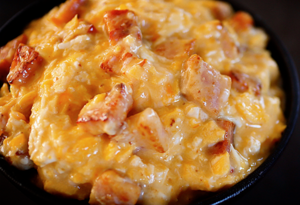
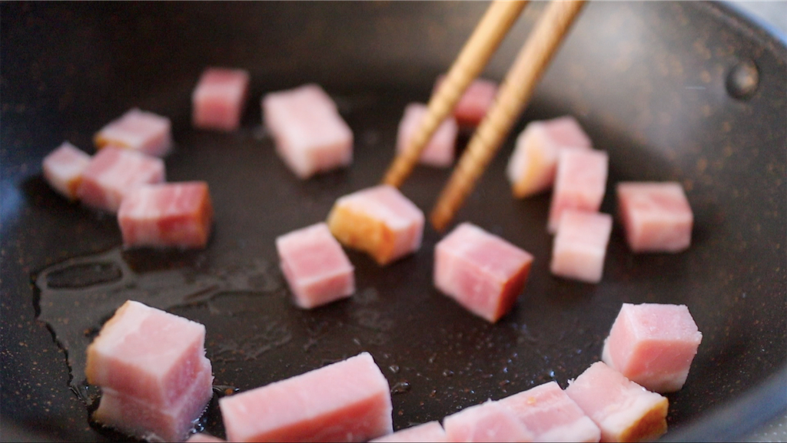
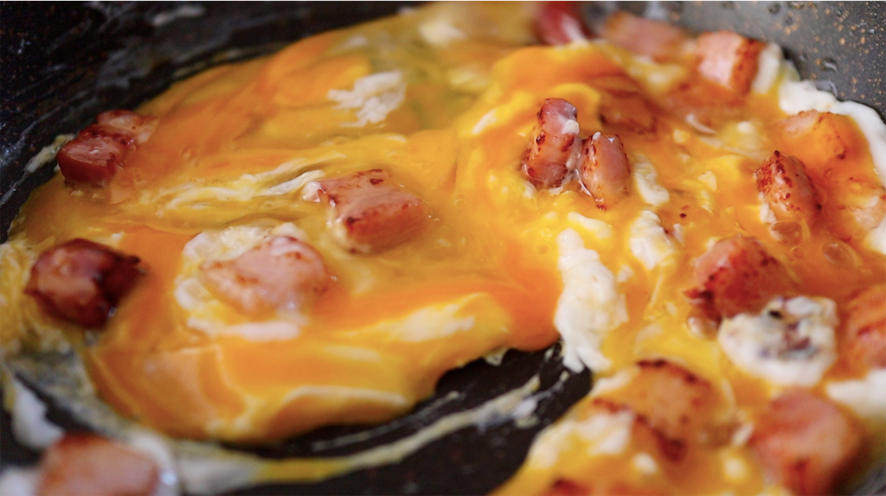
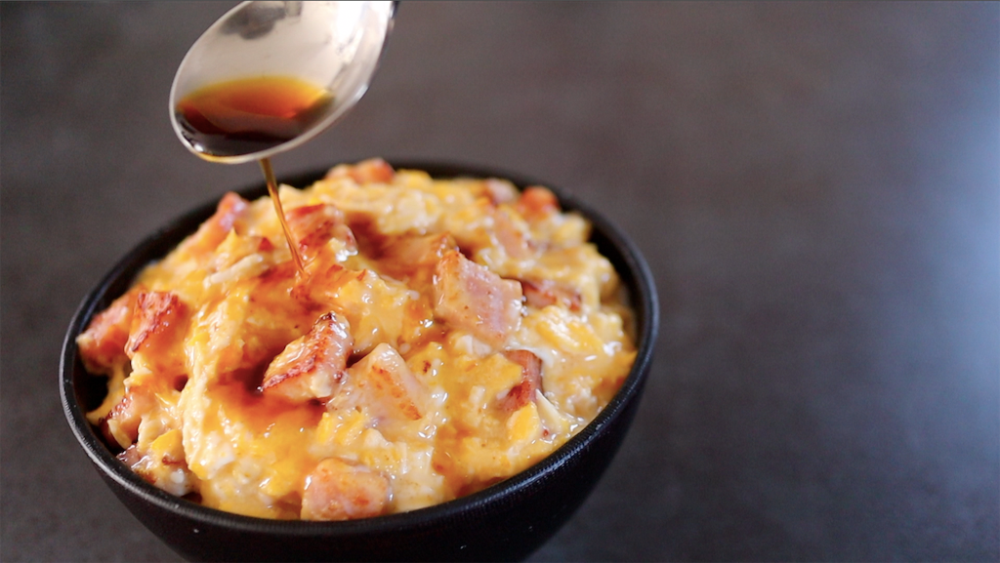

材料1人分
厚切りベーコンor普通のベーコン 好みの量
卵 1個
スライスチーズ1枚
めんつゆ 大さじ1
(ペットボトルキャップ2杯でおおさじ1杯分)
1.フライパンを中火で熱し、ベーコンを入れて全面に焼き色が付くまでじっくり炒める。
2.ベーコンに焼き色がつけば卵を落としてよく混ぜ、少し生の部分がある状態で加熱を止める。
3.卵が半熟の一歩手前になれば素早くチーズを入れて、卵のダマがなくなるようにチーズとよく混ぜ合わせる。
4.最後にご飯の上に盛り付け、めんつゆを大さじ1杯かけたら完成！
